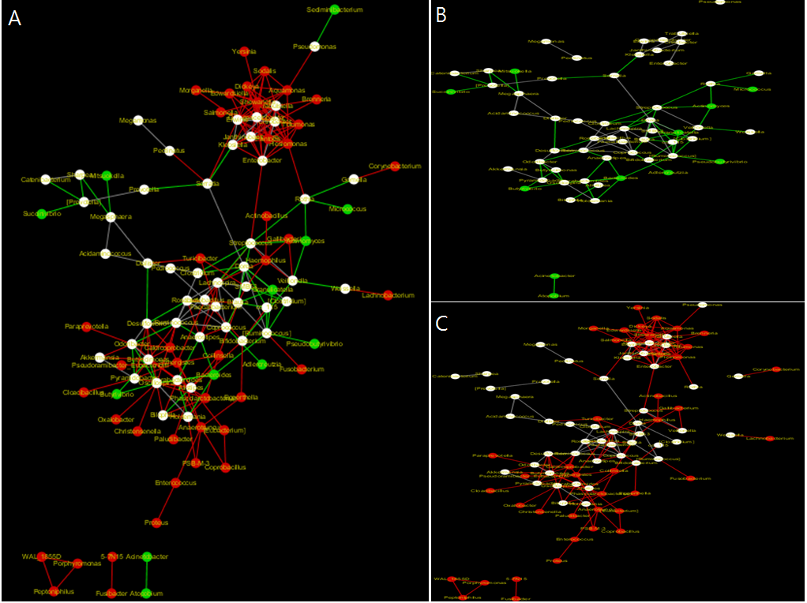
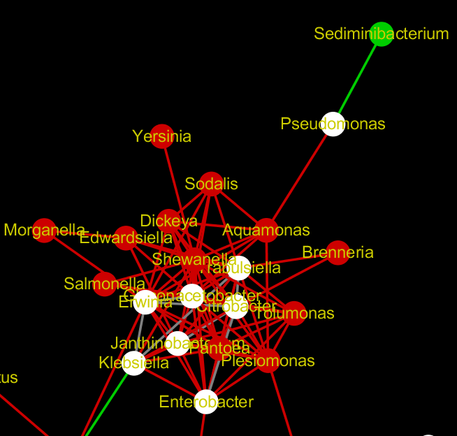

The proportionality method was then applied to a stroke case-control microbiome abundance data. Yin et al. discussed how gut microbiota is associated with stroke or transient ischemic attack. They used a machine learning approach to classify data points to highlight differences in microbial composition. Stroke and transient ischemic attack patients had significant dysbiosis of gut microbiota.

Figure 4. Network inferences of stroke case study datasets. A. networks for stroke patients and healthy control overlapped. Green represents unique entities in healthy control network, while red represents those in stroke patients network. White indicates nodes and edges present in both network. B. Network for healthy control. C. Network for stroke patients. This Figure is a visual representation to provide an overall view of the networks. Labels here are not important.
The network inference was performed at genus level. The method successfully detected OTUs that are highlighted as significantly different in stroke patients and healthy controls from the original paper; Parabacteroides, Enterobacter, Alistipes, Megasphaera, Desulfovibrio, Lactobacillus, Eubacterium, Synergistes were found to be significantly different in cases and controls. For the stroke network, the literature search was performed for the all nodes. In total, 441 articles were retrieved, and finding shows that genera detected by the method at least have been studied with respect to stroke.

Figure 5. The cluster with the most changes in the two networks inferred for stroke case study datasets. Red indicates entities only present in the network for stroke patient data and green indicates those in the network for healthy controls. White shows nodes and edges are present in both network.
The cluster of networks where most changes are detected is highlighted in Fig 5. Of all of nodes in the cluster, Pseudomonas is present in both networks, but the interactions for Pseudomonas change significantly in healthy controls and stroke patients (Fig. 5). Pseudomonas and its direct neighbor (Aquamonas for stroke and Sediminibacterium for healthy) could potentially be related to stroke. Literature that refer to any of these genera with stroke was retrieved: 0 matches for Sediminibacterium. 54 matches for Pseudomonas, and 0 matches for Aquamonas. Most of the articles retrieved are related to stroke-associated pneumonia. This result indicates that some studies have been done on stroke with respect to Pseudomonas but not the other genera although the focus is also on pneumonia. Thus, the method was used as a hypothesis generator as the network inferred highlights Pseudomonas, Aquamonas, and Sediminibacterium interactions and portends that future research on these interacting partners on stroke could be interesting.